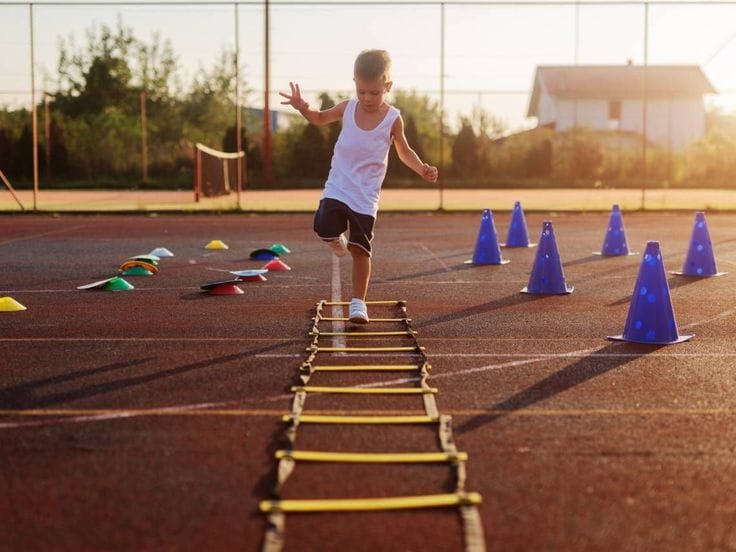

Actividades Físicas Deportivas
Las actividades deportivas son ejercicios físicos estructurados y competitivos que mejoran la salud física y mental. Promueven valores fundamentales, previenen enfermedades y fomentan un estilo de vida activo y saludable para todas las edades.
Conjunto: Fútbol, baloncesto, rugby.
Individuales: Atletismo, natación, tenis.
Combate: Karate, judo, boxeo.
Fitness: Yoga, crossfit, zumba.


Actividades Culturales
Son expresiones artísticas, tradicionales y educativas que enriquecen nuestra identidad. A través de museos, conciertos y ferias gastronómicas, la cultura fomenta la cohesión social, promoviendo el pensamiento crítico y la sensibilidad humana.
"La cultura es el alma de una comunidad."